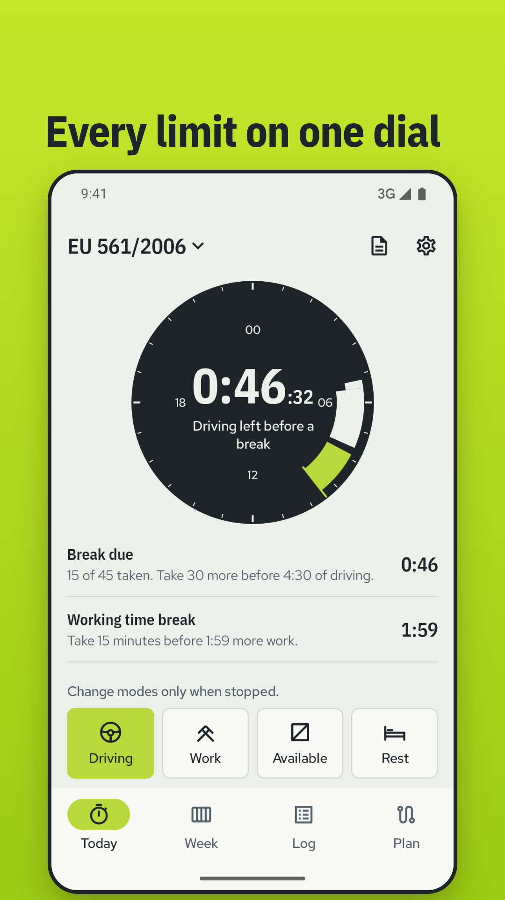
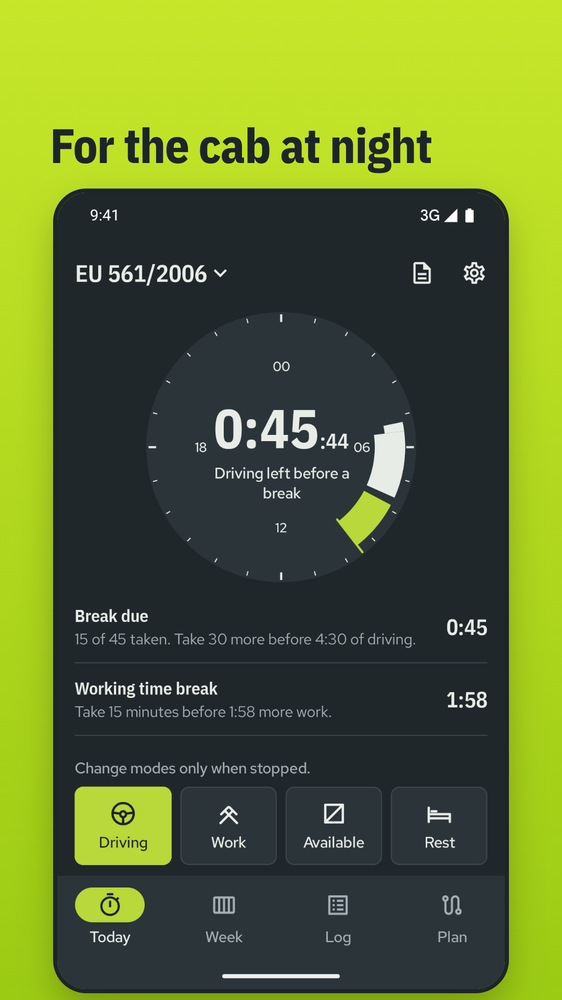
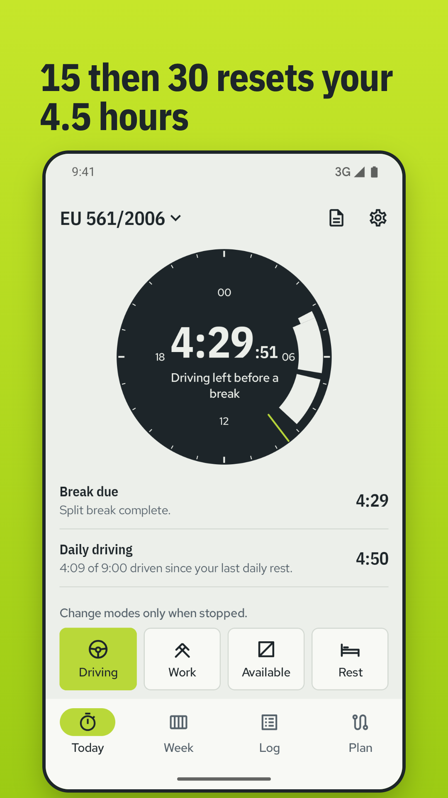
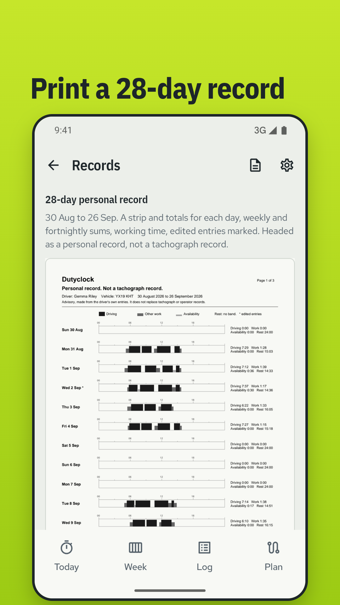
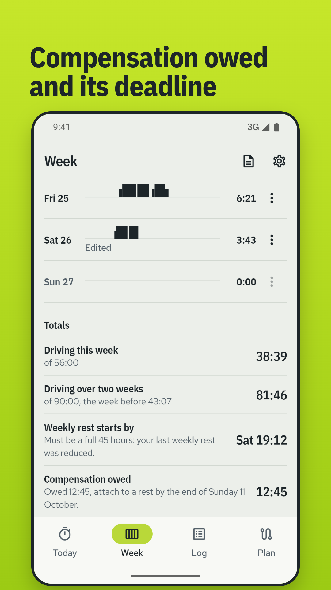
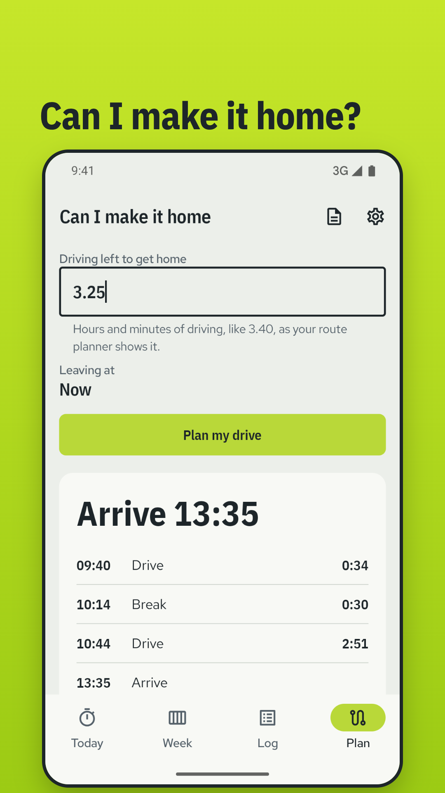

The drivers' hours you owe, counted down.
EU 561/2006, AETR, van and GB domestic countdowns, plus working time. One price, fully offline.
Get it on Google Play

The tachograph chart, redrawn as a live instrument.
Midnight at the top, the day running clockwise. Driving draws the thickest band, other work a thinner one, availability the thinnest, rest nothing at all. The stretch you are in now is lit, and the most urgent limit counts down in the middle.
Tap the mode you are in, the same four your tachograph uses. Missed a tap? Move, split or delete any entry and every limit recalculates.
What it counts
Driving
- 4.5 hours, then 45 minutes or 15 then 30
- 9-hour days, and your two 10-hour days
- 56 hours a week, 90 over two
- GB domestic: 10 hours driving, 11 on duty
Rest
- Daily rest: 11, reduced 9, or 3 then 9
- The latest time your rest must start
- Weekly rest: 45, or reduced 24
- Compensation owed, with its deadline
Working time
- A break after 6 hours of work
- 30 or 45 minutes by hours worked
- 60 hours in a week
- The 48-hour average, leave credited




USD 4.99
Paid once, in local currency where you buy it. No ads, no subscription, no account. Works fully offline: no location, no sign-in, nothing leaves your phone.